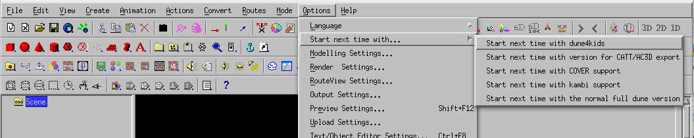

Switch to dune4kids
Use the menupoint "Options -> Start next time ... ->
Start next time with dune4kids".

End the program with "File -> Exit"

When the program ist started again, it shows then the right dune4kids
userinterface.

When you can work with the commandline or batchfiles, you can start the
program instead with the commandlineparameter "-4kids" e.g.
dune -english -4kids